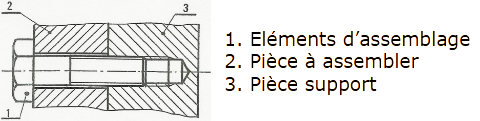
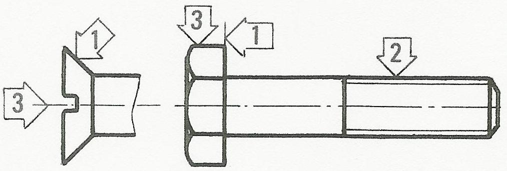
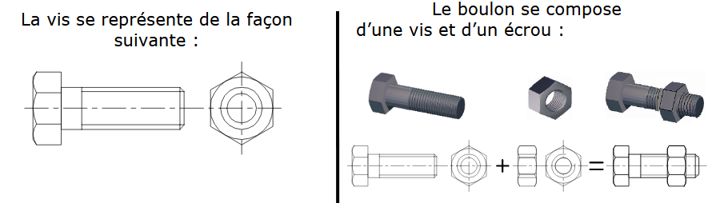
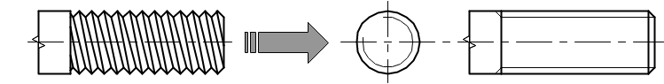
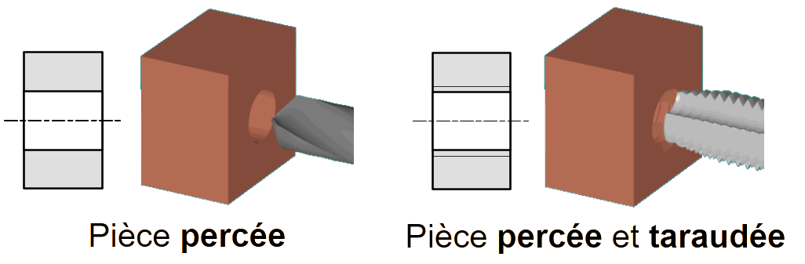
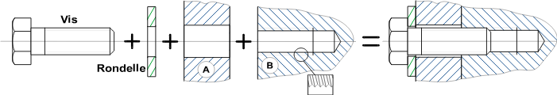
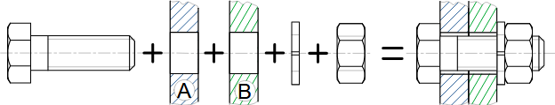

Définitions
Il existe énormément d’éléments standards appelés « vis » mais on distingue deux grandes familles de vis qui sont les vis d’assemblage et les vis de pression. Nous étudierons la famille des vis d’assemblage, elle permet d’assurer une liaison complète, rigide, démontable entre des pièces, en créant un effort de pression entre celle-ci.

NOTE : Une vis d’assemblage est composée de trois parties :
1. Surface d’appui (plane ou conique) : Élément de poussée
2. Partie filetée : Élément de liaison
3. Tête : Élément de manœuvre ou d’entrainement

Représentation des vis et boulons

Remarque : La représentation du filetage sur toute la longueur de la vis étant trop fastidieuse, on utilise pour dessiner les filets une représentation symbolisée où le fond de filet est matérialisé par un trait continu fin.

Utilisation des vis ou boulons
Pour assembler des pièces par éléments de visserie, celles-ci doivent être percées pour permettre le passage de la vis et taraudées pour son implantation.

La vis peut être utilisée seule pour assembler deux pièces A et B, l’une étant percée pour permettre le passage de la vis et l’autre percée et taraudée pour permettre l’encrage de la vis. L’ajout d’une rondelle percée permet d’augmenter la surface d’appui de la tête pour assurer un meilleur serrage par pression.

Remarque : Lorsque l’on dessine un assemblage vissé complet, la représentation de la vis l’emporte sur la représentation du taraudage.
Le boulon (association d’une vis et d’un écrou) permet d’assembler des pièces de faibles épaisseurs (A et B), percées toutes deux pour permettre le passage de la vis et plaquées par l’écrou taraudé. L’ajout d’une Rondelle élastique percée permet de plaquer l’écrou au fond des filets et pallier ainsi à un éventuel desserrage du boulon.
